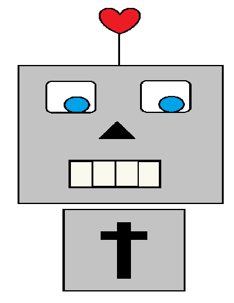

<header>
  <!-- <h1> Bible Bot</h1> -->
  <div>
    
  </div>

  <input id="search" type="text" name="" value="" [(ngModel)]="issueFilter.keywords" placeholder="Search">
  <!-- <button type="button" name="button">Search</button> -->
</header>

<!-- <div class="traced-sign  grey-out">
  <p class="middle-text grey-out">
    Seek and you shall find
    <br>

    :)
  </p>
</div> -->
<div class="list">

   <!-- <a md-raised-button routerLink=".">Raised button</a> -->
   <!-- <a md-fab routerLink="."><md-icon>check</md-icon></a>
   <a md-mini-fab routerLink="."><md-icon>check</md-icon></a> -->

  <a md-raised-button routerLink="." class="grow" type="button" name="button" (click)="displayVerse(data.verseID, data.issue)" *ngFor="let data of bibleData | filterBy: issueFilter; let i = index" > {{data.issue}}
    <!--  showing them issue but filtering search by kewords and issue - but must hide the keywords-->
    <p [hidden]="true" *ngFor="let k of data.keywords | filterBy: issueFilter"> {{k}} </p>

  </a>

</div>
